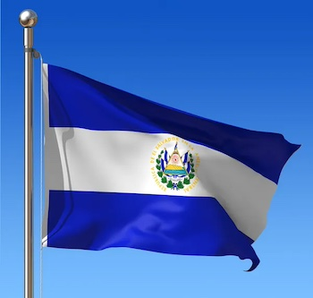

About Me
My name is Melissa Chirino, My family and friends call me Meli. I'm from El Salvador and currently living in West Virginia, USA. I got married five years ago and We have a little boy. I love to learn new things and spend time with my family.
San Vicente, El Salvador

San Vicente is a department of El Salvador in the center of the country. San Vicente is known for the variety of typical sweets made with coconut preserves, nance, and tamarindo. One point of interest is the Tower of San Vicente.